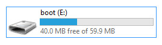
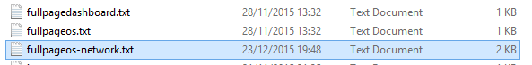
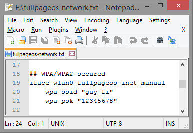
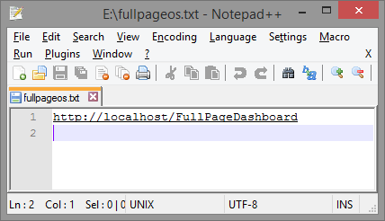

Enjoy hacking and fork us!
Guy Sheffer Tailor Vijay @tailorvj and Amit Dar
background by pagesolar cc-by-nc-sa-2.0
background by chaoticmind75 cc-by-nc-sa-2.0

background by pagedooley cc-by-nc-sa-2.0
Edit fullpageos-network.txt with your wifi settings, or alternatively attach router with cable


background by chaoticmind75 cc-by-nc-sa-2.0
open fullpageos.local in VNC
background by pagedooley cc-by-nc-sa-2.0
plus = add || delete = remove
background by chaoticmind75 cc-by-nc-sa-2.0
Simply define URL in fullpageos.txt

background by draganbrankovic cc-by-nc-sa-2.0